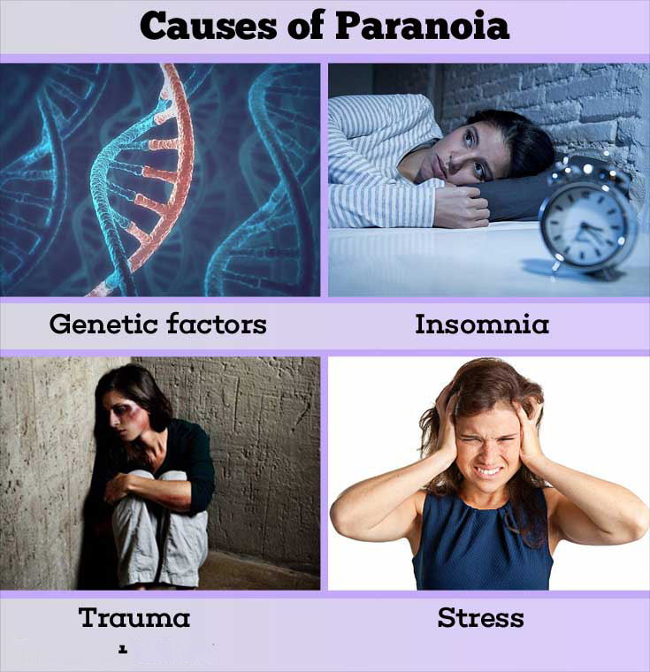

What are the signs of an unhealthy relationship ?
Relationship is the connection between two people or things. Every relationship is important in a
person’s life. Communication is the most important part of a relationship. The more we communicate,
understand and sacrifice and try to understand each other, the more the relationship gets in a positive
shape. When there is communication gap or when someone communicates in aggression or in abusive
language then slowly it turns into an unhealthy relationship. There are types of behavior that turns a
relationship into a toxic, unhealthy relationship. Those behaviors are given below:
1) Lack of communication
2) Lack of Trust
3) Feeling insecure in the relationship
4) Abusive behavior
5) The conflict and arguments just keep popping up
6) The focus in on changing the other person
7) Your partner doesn’t seem interested when you experience success, or they belittle your success
8) The other “C” word: "Crazy." If you call each other "crazy" during arguments, it’s a pretty bad sign. It
shows that you’re no longer willing to listen to each other’s point of view because you’ve written it off
as irrational.
9) When you argue, it quickly escalates to ultimatums or threats—"If you don't ..., I'll ..."
10) Your partner is coercive when it comes to sex.
11) You feel lonely when you’re together.
12)You’re very critical of each other, and you feel constantly nitpicked about the ways you’re not “good
enough.”
There are many other points that are also the reason of an unhealthy relationship. To know how to deal
with your relationship challenges you can book a session with our experienced psychologists and
therapists at Vorosha Mental health Service.
https://www.psychologytoday.com/us/blog/in-flux/201407/10-relationship-red-flags?fbclid=IwAR03IIKq7fmmDISN8NRqf6adaOEExzh7bl6_9y78gl4w-aSSSbXBbyIuOyQ
https://www.lifehack.org/articles/communication/11-warning-signs-unhealthy-relationships-you-need-aware.html?fbclid=IwAR1GO-2khwrqXsZT-eIjpzMORciz2mWyF3TnEUYenVxwVlbslw263Il3YV4
What is drug and how to get rid of drugs and why getting rid of drugs is a blessing in
life?:
In our life every day is important and meaningful and we should utilize every day in a proper
way. There are specific bonding phase in a life an individual human being carry and it is
whether we work with our colleagues, spend time with friends, beloved ones and lastly the love
and affection relationship we share with our partner .It is obvious there will be problems and up
and downs in life which might affect our work can hamper in your day to day life and can be a
reason of problem in our family life but we should never get in drugs or other things to get rid of
the problems we face in our life. We have to remember that drugs are never a solution to
problems but the starting of our destruction in life. Drugs are a substance other than food
intended to affect the structure or function of the body which is harmful for the body. Drugs
don’t just affect your physical body and health; they can affect your mental health, your finances,
your relationships, your social life and your criminal record. Each drug causes different physical
reactions, depending on the type of drug. Some will make you feel more awake, alert and
energetic. Others will give you a calm, relaxed feeling. Some alter your perceptions and can
cause hallucinations. Others may make you feel numb. Long-term use and larger doses have
negative effects can seriously harm your health and even cause death, including disease risks
from sharing needles, and permanent damage to the brain and other organs.

How to get rid of drugs?
1) avoiding places where you know drugs and alcohol will be available
2) surrounding yourself with friends who don’t use drugs
3) knowing how to resist temptation
4) learning how to cope with stress and relax without drugs
5) distracting yourself with activities like exercise or listening to music
In order to have a normal life we should get our self-free from drugs to lead a healthy and
peaceful life.
Reducing or quitting drugs can improve your life and can be blessing in many ways. It can:
1) Improve your physical and mental wellbeing
2) Reduce your risk of permanent damage to vital organs and death
3) Improve your relationships with friends and family
4) It helps you to reconnect with your emotions
5) It increases your energy
6) It helps you to sleep better
7) It will Improve your appearance
8) It will save your money
A drug free normal life is a blessing in human life and it helps the person to lead a very healthy
life.
Counseling is also very helpful tool to get rid of drugs. Individual or group therapy can help you
learn to cope without drugs. Counselors forge a bond with their patients by making them realize
factors that triggered drug abuse in the first place and the impact it has had on their lives. Drug
abuse habits can exacerbate the financial conditions of affected families too. Counselors explain
to patients how their continued tryst with drugs will not only cloud the future of their loved ones
while already ruining their present but also ruin the present.
For more information and counseling session you can book a slot with our experienced
psychologists and therapists at Vorosha Mental health Service.
Best ways to improve self-control in day to day life
Self-control is the ability to control human behavior in order to keep away from temptations to
achieve goals. The ability to resist unwanted behavior is the most important way to have self-
control in life. The desire to have something in life and in order to reach that will power is very
important and this power of will power can be achieved through practice of self- control in day
to day life.
The best ways to improve self-control are:
1) Try to focus on one goal at a time.
2) Plan for situation that might break your resolve.
3) Avoid temptation.
4) Ego depletion is must if you want to improve your self-control.
5) Remind yourself for the consequences later on if you do something in rush .
6) Meditation is a great way to strengthen your self-control muscle.
7) The ability to learn how to manage stress in life can improve self-control in an individual’s
life.
8) Forgive yourself and forget things that you can’t turn back.
For more information and counseling session you can book a slot with our experienced
psychologists and therapists at Vorosha Mental health Service.
https://www.makemebetter.net/6-ways-to-improve-self-control/
https://www.verywellmind.com/psychology-of-self-control-4177125
What are the alternative treatments for anxiety?
Some anxiety is just a normal part of human life. It’s very much common in today’s often-
Chaotic world. Anxiety is not that bad because it keeps you awake of danger, motivates you to
stay well organized and prepared and helps you to calculate the risks and to take steps by which a
person can avoid risks in life. Unchecked Anxiety may result in very bad way in our quality of
life. Alternative therapies can be helpful in reducing anxiety, but it may take some time before
you see results. If you’re having a panic attack or other severe symptoms of anxiety, alternative
therapy alone probably will not be enough. Alternative therapies often work best when used
along with traditional treatment, such as medication and counseling. It’s always suggested and
advised to consult with Psychiatrists, Psychologist and counseling experts before beginning an
alternative treatment program.
Here are some alternative treatments that can help with anxiety:
1) Limit your caffeine intake: That morning cup of coffee might help you get out of bed, but
having too much can give you the jitters and decrease your ability to handle anxiety well. It can
also cause your body to act as though it’s under stress, boosting your heartbeat and increasing
your blood pressure. This can lead to a panic attack.
2) Avoid alcohol and nicotine: Some people use alcohol and nicotine to relieve their symptoms
of anxiety. This relief is only temporary. Alcohol and nicotine can make the symptoms of
anxiety worse and more frequent.
3) Eat a balanced diet: It’s important to maintain a balanced diet whether or not you’re
experiencing anxiety. Try to eat a wide variety of fresh, whole foods every day. Eating healthy
food makes you feel better. Avoid processed or fast food and limit your intake of sweets. Eating
unhealthy food adds stress to your body. This makes you less able to handle the other stresses in
your life.
4) Drink more water: Seventy percent of the body’s weight is water. Water is the essential
component of a healthy body and mind, and we often don’t get enough of it. Drinking eight to
eleven large glasses of water or other hydrating liquids per day helps your body perform
properly. This can help relieve stress.
5) Get regular exercise: Getting regular exercise is good for relieving stress. Cardiovascular
exercise has been shown to help lower stress levels and anxiety, and improve the immune
system. Cardiovascular exercise means getting your heart rate up for 30 minutes. Developing a
regular exercise routine can help you feel more in control of your health, which can also reduce
your anxiety.
6) Get plenty of sleep: A lack of sleep can increase negative thoughts and can place extra stress
on the brain and body. Try to get at least seven to nine hours of quality sleep every night. If you
have trouble sleeping, try to support your body’s natural sleep schedule by:
* going to sleep and waking up at the same time each day
* taking only short naps for 15 to 20 minutes in the early afternoon if you need to
* exposing yourself to bright sunlight in the morning, spending more time outside during
the day in natural light
* avoiding bright screens one to two hours before bed and making sure you sleep in a
darkened, cool room
* getting regular exercise
7) Practice deep breathing: Shallow, fast breathing is common with anxiety. It may lead to a
fast heart rate, dizziness or lightheadedness, or even a panic attack. Deep breathing exercises—
the deliberate process of taking slow, even, deep breaths — can help restore normal breathing
patterns and reduce anxiety.
8) Try aromatherapy: Aromatherapy uses fragrant essential oils to promote health and well-
being. The oils may be inhaled directly or added to a warm bath or diffuser. Studies have shown
that aromatherapy:
* helps you relax
* helps you sleep
* boosts mood
* reduces heart rate and blood pressure
9) Meditation: A main goal of meditation is to remove chaotic thoughts from your mind and
replace them with a sense of calm and mindfulness of the present moment. Meditation is known
for relieving stress and anxiety. Research from John Hopkins suggests 30 minutes of daily
meditation may alleviate some anxiety symptoms and act as an antidepressant.
10) Talk to someone: Tell friends and family you’re feeling overwhelmed, and let them know
how they can help you. Talk to a physician or therapist for professional help.
Avoiding anxiety may not always be possible in our day to day life, especially when you need to
keep a constant balance between your workplace and personal life. These are some simple ways
to turn down the anxiety from an individual’s day to day life. If you are feeling devastated due to
your troubles in day to day life then free to contact Vorosha Mental health Service where your
issues will be taken care by the expert mental health therapists in a very cost-effective way.
https://adaa.org/tips
https://www.healthline.com/health/natural-ways-to-reduce-anxiety#4.-Ditch-caffeine
https://www.healthline.com/health/anxiety-alternative-treatments#water
What is mental health? Why mental health is important? What are the early warning
signs of someone having problem with their mental health?
Mental health includes our emotional, psychological and social well-being. It affects how we
think about a certain issue and how we act to the issue based on situation. It also helps us to
determine how we will handle stress and how we will make choice over time. Mental health is
important in every stage of our life from the early childhood to the ultimate stage of our life.
Suicide rate increase when mental health is neglected so we can understand how much important
mental is in our life.
There are three main reasons why mental health is so important:
1)Mental Health Affects Physical Health : Mental illness matters just as much as any disease,
and it can take one’s life as easily as any other. The mind and the body are connected. Many
mental ailments cause stress, which lowers the immune system. This means more frequent
sickness and inability to cope. Stress and anxiety can take a toll on our physical health.
According to WebMD, “worry causes the body to release stress hormones that speed up your
heart rate and breathing, raise your blood sugar, and send more blood to your arms and legs.
Over time, this can affect your heart, blood vessels, muscles, and other systems. After affecting
the body the body slowly starts to shut down and that’s when physical health totally gets
collapsed.
2)End Stigma and Shame to Lead Better Lives : It’s better to talk about mental health so that
people can come forward and help. Mental health is a normal issue and we should not feel
ashamed or broken if we face any mental problems. We should always be positive and we should
talk more about the problems and then the problems will be smaller with less hold on our lives.
3) Mental Health Affects Everything: Mental health basically affects everything. Our mental
health affects how we cope with life. Lack of treatment leads to issues like anxiety, fear,
worthlessness, sadness and lastly loss of control in life. It might then affect our relationship, our
decision making capability, self-harm and lastly professional failure might happen due to lack of
concentration.
The early warning signs an individual might find when they feel they have some mental health
problems. Experiencing one or more of the following feelings or behaviors can be an early
warning sign of a problem:
1) Eating or sleeping too much or too little
2) Pulling away from people and usual activities
3) Having low or no energy
4) Feeling numb or like nothing matters
5) Having unexplained aches and pains
6) Feeling helpless or hopeless
7) Smoking, drinking, or using drugs more than usual
8) Feeling unusually confused, forgetful, on edge, angry, upset, worried, or scared
9) Yelling or fighting with family and friends
10) Experiencing severe mood swings that cause problems in relationships
11) Having persistent thoughts and memories you can't get out of your head
12) Hearing voices or believing things that are not true
13) Thinking of harming yourself or others
14) Inability to perform daily tasks like taking care of your kids or getting to work or
school
Quality mental health care requires specialized mental health professionals. If you are facing any
of the warning signs mentioned above in your life you can talk with us more counseling. For
more information and counseling you can book a slot with our experienced psychologists and
therapists at Vorosha Mental health Service..
https://www.mentalhealth.gov/basics/what-is-mental-health
https://www.lifehack.org/874881/why-is-mental-health-important
https://reliefweb.int/report/world/mental-health-just-important-physical-health?gclid=CjwKCAjw64eJBhAGEiwABr9o2NOUtndQ3DPFMogOtCP_C-5EG1Eq2OyQM-jszqgY12XgkHyc6dY51hoCXmUQAvD_BwE
What are the tips for new parents to remain stressed-free?
A new born can bring the ultimate joy to a family. It is a situation when the parents tend to live
their everything for the sake of their baby. They forget about their regular life just to be in side of
their babies. Whether you're a first-time parent or a veteran, consider 10 practical tips to keep
stress under control.
1. Take care of yourself: Eat a healthy diet and take care of your health along with
babies. Try to sleep with the baby and try to work out for some time when you get time
throughout the whole day.
2. Establish visiting rules: Try to establish a time when the visitors can visit your baby.
Let them insist to wash hands and handle baby with utmost care and also strictly avoid
anyone who is ill if they want to visit your baby.
3. Go with the flow: Allow plenty of time each day for nursing sessions, naps and crying
spells. When you need to head out, give yourself extra time to pack your supplies and
make that inevitable last minute diaper change.
4. Expect a bunch of emotions: A bunch of emotions might sometime bother you.
You might be tired due to sleepless night so try to communicate with your partner so that
he supports you.
5. Relax your standards: Keep the house neat and clean up to the mark based on your
free time. Don’t hurry on doing chores to complete. It will create extra hassle but make
sure you keep the house surroundings clean.
6. Get out of the house: If you are enough stressed try to go out with the baby for a fresh
walk in the park which will be soothing at times and will make you fresh.
7. Accept a helping hand: Accepting a helping maid is necessary if you are finding it
tough to complete work by own. You should appoint a helping hand who can support
you for works.
8. Nurture other relationships: Your newborn needs your love and attention, but you
won't let your baby down by spending time with others. If you have other children, set
aside one-on-one time with each of them. Schedule dates with your partner. Meet a
friend for lunch or movies.
9. Keep your perspective: The newborn days won't last long. Step back and appreciate the
moment, even amid the chaos.
10. Know when to seek additional help: Parenting is a challenge, even on a good day. If
You’re depressed or you're having trouble adjusting to life with a newborn, consult with
mental health provider who can guide you well.
Quality mental health care requires specialized mental health professionals. If you are facing any
problems regarding parenting your kids or finding it tough to manage you can talk with us more
counseling. For more information and counseling you can book a slot with our experienced
psychologists and therapists at Vorosha Mental health Service.
https://www.mayoclinic.org/healthy-lifestyle/infant-and-toddler-health/in-depth/newborn/art-20045498
What are some of the symptoms of stress?
We are experiencing a lot of change in our life for last one and half years due to Covid 19 and
life is no longer the same as it was few years back. We are now experiencing fear, stress and
sadness a lot in life due to current instable situation which is sometimes giving us a lot of stress
and anxiety. There are many symptoms of stress and anxiety. These are:
Physical symptoms: Shortness of breath, chest pain, and fast heart is some of the symptoms that
can result in increasing stress and anxiety in our life.

Cognitive symptoms — Lack of concentration, problem solving or intrusive images or dreams
are some of the cognitive symptoms that might create stress and anxiety in life.
Emotional symptoms — Anxiety, panic, depression, irritability, anger, feelings of emptiness are
some of the symptoms that result in stress and anxiety. We need to be aware of all these set of
emotions and should try to focus on things that give us positive vibe rather than anxiety and
stress.
Behavioral symptoms — Being hyper-alert to your environment, isolating, decreased appetite
and sleep, increased alcohol consumption a create difficulty and results in stress and anxiety due
to irregular life style. All these can create much irregularity and also can put an individual
through stress and will make life tough to handle. We need to be aware of all these and should
try to cope to environment so that we might not result in anxiety and stress in life.
These symptoms can occur immediately or in the days or weeks that follow a life-changing
event. Sometimes they may not occur for months, but can last for many weeks once they appear.
If you experience chronic symptoms that interfere with your daily functioning, it’s important to
seek professional support.
Quality mental health care requires specialized mental health professionals. If you are facing any
of the symptoms in your day to day life which might result in stress and anxiety you can then
talk with us for counseling. For more information and counseling you can book a slot with our
experienced psychologists, Psychiatrists and therapists at Vorosha Mental health Service.
https://www.sutterhealth.org/health/mind-body/simple-ways-to-navigate-stress
What causes nerves? What are the symptoms of nerves?
Nervous energy is the result of additional cortisol and adrenaline in the body. These chemicals
can be triggered by real or perceived threats. An individual may be experiencing increased
nerves due to the following situations:
1) An important presentation: An important presentation can be one of the reasons; a person
might experience increased nerves in that very moment. In order to keep nerves under control we
should take deep breath and should try to focus on the matter.
2) An interview or evaluation: An interview or evaluation can also be one of the reasons which
might result in increased nerves for a person. An individual should focus only on that very
moment and face the interview rather than thinking what will happen if the situation gets worst.
3) An extended period of stress: An extended period of stress can result in negative way and
the individual might feel increased nerves and pressure. We need to take things easily and should
try to focus to change the focus and should try to relax the body so that we can get out of stress.
4) Health concerns: Health issues sometimes do create problems in a human being and results
in increased stress for the person and it creates problem physically and also mentally. Exercise
provides many physical and mental benefits. Even just 20 minutes of exercise three times a week
can help you feel more relaxed and improve your mood. Regular exercise can help you to lead
life without stress
5) Major life changes, such as moving: Major life changes, moving in a new place sometimes
do create extra pressure and stress in life. We need to adapt with life with the way it goes on and
should not pressure our self which might result in stress in life. We need to accept the facts in life
and should accept everything and should try to adapt with things instead of being stressed out
with unwanted situations.
Stress or nerves can cause a host of symptoms. Here are the most common symptoms of nerves:
* Headaches
* Increased heart rate
* Difficulty sleeping
* Stomach aches
* Difficulty concentrating
* Irritability
Quality mental health care requires specialized mental health professionals. If you are facing
increased nerves in your day to day life which might result in problem in your life then you can
talk with us for counseling. For more information and counseling you can book a slot with our
experienced psychologists and therapists at Vorosha Mental health Service.
https://www.indeed.com/career-advice/career-development/how-to-calm-nervous
What is sadness and depression in general?
Sadness:
Sadness is a normal human emotion that every single person does experience at stressful and
tough time. There are a lot of issues in one individual’s life that might leave people down with
sadness and grief. It can happen due to loss in business, loss of job, lack of career progression,
misunderstanding with beloved ones, financial problems , failing in an important exam and also
few other incidents that can trigger sadness in an individual’s life.
A person experiencing sadness can feel some satisfaction and relief by crying, disclose or talking
out frustration by sharing with others. Sadness usually passes with time. out frustration by sharing with others. Sadness usually passes with time.
Depression:
Depression is a mental disorder that has an unbearable effect on a person’s life. It can happen
any time at any age. Depression leads people to insomnia, sleeplessness, inability to concentrate
on things and lastly people sometimes do commit suicide due to depression.
A person experiencing depression should try to do maintain a regulate life and they should
practice things like good sleep habits, physical exercise, healthy eating and lastly vitamin and
minerals. All this will help them to get into a regulated life.
Psychotherapy is not the newest treatment for depression, but it's typically a very effective one.
Therapy involves talking to a counselor about your symptoms, stressors, relationships, and life
situations.Therapy works for child, adult, elderly, and teen depression treatments. Yet, it has
none of the harmful side effects that can come with medications.
Quality mental health care requires specialized mental health professionals. For more
information and counseling you can book a slot with our experienced psychologists, Psychiatrists
and therapists at Vorosha Mental health Service.
https://www.betterhelp.com/advice/depression/how-to-cure-depression-steps-you-can-take-to-get-back-on-track/?utm_source=AdWords&utm_medium=Search_PPC_c&utm_term=_b&utm_content=118051369647&network=g&placement&target
https://www.medicalnewstoday.com/articles/314418?c=875251892035#knowing-the-difference
What is will power? What are the ways to increase will power?
Will power is the stimulation to practice will. A person with strong and much will power will not
return back even if it is the toughest situation or if there is a strong competitor. On the other hand
a person with little willpower will give up easily. In summary it can be said that Will power is
the ability to employ strong determination which allows you to perform something difficult and
tough.
If you want to get what you want then you will have to have strong willpower. You must be
determined and should do what it takes to achieve the destination. Will and power are closely
connected, as using will is employing power. Powerful and strong people often exercise what
seems to be a strong will, although this often comes from the confidence that having power
creates rather than directly from having the power.
Will power tends to be stronger over time if you are working relentlessly over your own goals
in a planned way.
The best ways to increase willpower are:
1) Don’t take on things a lot at once.
2) Plan ahead in a structured way
3) Avoid temptation
4) Practice mindfulness meditation
5) Reward yourself
6) Try to remind yourself what to do and what to avoid
7) Try to get support from others
8) Avoid people who try to employ negativity in your mind
Quality mental health care requires specialized mental health professionals. For more
information and counseling you can book a slot with our experienced psychologists, psychiatrists
and therapists.
https://www.merriam-webster.com/dictionary/willpower
https://www.premierhealth.com/your-health/articles/women-wisdom-wellness-/seven-tips-to-increase-your-willpower
What is work burn out? Why work burn out happens and how to deal with it?
Work burn out is a state of physical and emotional fatigue that involves a state of physical and
emotional exhaustion that also involves a sense of reduced accomplishment and loss of personal
identity which eventually creates dissatisfaction in an individual’s work life and that individual
eventually feels it tough to concentrate on the job in the long run.
The reasons of work burn out are:
1) Lack of control. An inability to influence decisions that affect your job — such as
your schedule, assignments or workload — could lead to job burnout. So could a lack of
the resources you need to do your work.
2) Unclear job expectations. If you're unclear about the degree of authority you have or
what your supervisor or others expect from you, you're not likely to feel comfortable at
work.
3) Dysfunctional workplace dynamics. Perhaps you work with an office bully, or you
feel undermined by colleagues or your boss micromanages your work. This can
contribute to job stress.
4) Extremes of activity. When a job is monotonous or chaotic, you need constant energy
to remain focused — which can lead to fatigue and job burnout.
5) Lack of social support. If you feel isolated at work and in your personal life, you
might feel more stressed.
6) Work-life imbalance. If your work takes up so much of your time and effort that you
don't have the energy to spend time with your family and friends, you might burn out
quickly .

There are few ways we can deal job burnout:
1) Evaluate your options: Discuss can be done with supervisor regarding what can be
done to get the ultimate result. Different options can be used to find the ultimate work
done.
2) Seek support: Employee assistance program can be a great support for to discuss
about the problems someone is facing regarding his / her job and how to deal with it.
3) Exploring relaxing activity: Yoga and meditation related things can make mind
fresh and sound and to start with a new spirit.
4) Get some sleep. Sleep restores well-being and helps protect your health.
5) Mindfulness. Mindfulness is the act of focusing on your breath flow and being
intensely aware of what you're sensing and feeling at every moment, without
interpretation or judgment. In a job setting, this practice involves facing situations
with openness and patience, and without judgment.
To know more how to deal with work burn out and issues feel free to book a slot with our
experienced psychologists, psychiatrists and therapists.
https://www.mayoclinic.org/healthy-lifestyle/adult-health/in-depth/burnout/art-20046642
What is trauma? What are the types of trauma? What are the symptoms of trauma?
Trauma is basically an emotional response to a horrific situation as example it can be said
(accident, rape, life threat or natural disaster). It needs to be cleared that a person may experience
trauma to any of the event that may find threating or harmful. Trauma always has an after effect
in a person’s life. The person gets emotional due to flash backs of that past experience which
result in personality change, decline in own care and lastly the feeling of hopelessness.
There are several types of trauma. They are:
1) Acute trauma: Acute trauma is reason of a single distressing event like: rape, assault,
car accident, child abuse, national disaster climate change etc. It often creates a long
term negative impression on the persons mind.
2) Chronic trauma : Chronic trauma is reason of multiple traumatic events which lasts for
a long term and create impacts in negative way in human’s life which lately causes
situation like : insomnia, decreased concentration on things , numbing and many more
issues in life.
3) Complex trauma: Complex trauma is similar to chronic trauma with a few differences.
It involves multiple, chronic traumatic events, but these events are always prolonged.
These events almost always occur within an interpersonal relationship, which causes
internal conflict for the survivor. Long-term sexual and domestic violence can contribute
to complex trauma.
The common trauma symptoms include the following:
1) Shame and guilt
2) Hopelessness and numbness
3) Excessive sweating
4) A constant state of alertness
5) Sleep difficulties
6) Jumpiness
7) Stomach pain
9) Lack of confidence in own
10) Irritability
If you believe you are experiencing symptoms like this it is important to seek help from
our experienced panel of mental health practitioners at Vorosha Mental Health service
as soon as possible. They will help you to get out of the situation as much as possible. For
more details and session with our psychologists,
https://www.ubersexualassaultlawyer.com/what-are-the-3-types-of-trauma/
https://www.medicalnewstoday.com/articles/trauma#definition
What is Co-parenting? The do's and don'ts of co-parenting well?
Co-parenting is a post-divorce parenting arrangement by which both the parents jointly
participate in their child’s demand fulfilling and upbringing in a systemic way. This involves a
substantial amount of interaction between the parents (both in public and in private). In Co-
parenting both the parents need to support the child and needs to work in joint to make
everything smoother for the children.
There are several things that need to be keeping in mind during the co-parent situation. The dos
and don’ts of co-parenting a child are given below:
1) Commit to making co-parenting an open dialogue with your Ex: Try to make an open
communication with your Ex. It does not have to be via phone call or face to face meet
up rather it can be done via mail, text, and voice mail or even through letter and if you are
comfortable via face to face meet up then also it can be done.
2) Commit to positive talk around the house. Make it a rule to frown upon your children
talking disrespectfully about your Ex even though it may be music to your ears.
3) Agree on specific things even if you don’t like it : Agree on specific things even if you
don’t like for the sake of your child and try to keep them happy. Example: If they want to
go for a visit in a park make some time and talk with your Ex and should plan and make
the visit happen to brighten the child’s day.
4) Keep your Ex informed: Although it is quite painful but try to keep things updated
between you and your Ex about different issues related to the child. Example: Let your
Ex know about child’s exam time, health condition, likes , dislikes and also if there is any
change in their behavior keep them updated between you and your Ex.
* Don'ts
1) Don’t jump into conclusion with your Ex: When you hear things from your children
that make you bristle, take a breath and remain quiet. Remember that any negative
comments your children make are often best taken with a grain of salt. It's always good to
remain neutral when things like this happen. Research shows that your child can learn to
resent and distrust you if you cheer them on.
2) Don’t be an unbalanced parent: Be a balanced person for the sake of the child. Don’t
let the child understand the problems between you and your Ex and never shout in front
of them even if you don’t like any behavior by your Ex.
3) Don’t accuse each other: Don’t accuse each other for mistakes or issues that related to
the child. Try to handle things with care and love and show responsibility to each other.
Rather than accusing each other try to build a strong bonding with the child and don’t
ever complain about anything to your child regarding your Ex , you have to remember he/
she may be your Ex but still he/she is a father or mother to the child.
4) Don’t burden your child: Don’t burden you child with negativity and cruelty. Positivity
should be practiced in all forms and aspects of life and especially in front of children.
If you believe you are experiencing symptoms that is creating problem in your co-
parenting try to seek help from our mental health practitioner at Vorosha Mental health
service as soon as possible. They will help you to get out of the situation as much as
possible.
https://www.psychologytoday.com/us/blog/two-takes-depression/201203/the-dos-and-donts-co-parenting-well
https://mensrightsdivorcelaw.com/blog/co-parenting-and-parallel-parenting/
What is anger management? What are the best possible ways to overcome anger?
Anger management is the system by which an individual understand that he is getting angry at
things so he needs to take action to calm down him in a positive productive way in order to live
peacefully. It is a fact that anger affects physical health. According to Yale University People
with anger management issues tends to get sick more often and also immune system gets weaker.
Anger also leads to coronary disease and lastly high blood pressure issues so anger management
is an important issue that needs to be taken care in order to lead a healthy and happy life.
When you let anger bubble away, it can cause an eruption. This can cause someone to be unable
to think in a clear way and also can damage your relationship and you become unable to have
trust on people. It can be said that overcoming anger is very much important to lead a normal
life. The best possible ways to overcome anger are given below:
1) Recognize the warning signs: When you are angry your heart rate rises rapidly and you
start to breathe faster so an individual needs to be vigilant to deal with the matters before
they build up.
2) Have a “time-out”: Avoid “leaping in” with an angry response. We need to calm our
self-down by counting to 10 before even you act.
3) Catch your breath: We need to try to slow our breathing process. This will help us to be
calm and quiet and we will be able to think clearly.
4) Regular exercise is a must: Regular exercise will improve our state of mind and will
make us less minded to anger.
5) Finding some quiet time: Finding some quiet time will help us to concentrate and think
deeply. It will help us to control our anger and will help us to think in deep to understand
what to do and what not to do. Mindfulness or centering are some techniques which will
make us relaxed and calm and quiet and will help us to cope with stress over the longer
term.
6) Avoiding Alcohol: Alcohol makes mind hyper and person gets angry easily without
thinking anything. We should avoid alcohol for the betterment of our health and also to
keep mind fresh.
7) Express our emotion: We need to express our emotion otherwise frustration will rise up
when we will keep thing inside. We need to talk with our friends and family about our
emotions and it will make us feel free inside.
8) Let it go: We need to let things go even if we find it unfair. If we can make this practice
then we will be able to move past bitterness and past grudges and can feel peace deep
inside our mind and brain.
If you feel you are failing to control your anger then it is important to seek help from
mental practitioners as soon as possible. They will help you to find a way out to control
your anger as much as possible.
https://www.mayoclinic.org/healthy-lifestyle/adult-health/in-depth/anger-
management/art-20045434
What is mood swing? What are the common causes of mood swing?
A mood swing is a sudden and quick change in emotional state of a person. During mood swing
a person quickly switch turn from feeling happy and upbeat to feeling sad, irritable or even
angry. There are some common causes of mood swing. Often, lifestyle factors play a role in the
onset of mood swings. People may have sudden changes in mood if they are:
1) Experiencing a significant life change, such as moving home or changing job.
2) Feeling stressed, tired or overwhelmed.
3) Not getting enough sleep or rest.
4) Not eating balance diet food.
5) Taking medications that impact in mood and sleep.
Sometimes mood swings are symptoms of mental illness or they could give a clue that something
else is happening in your body. Serious mood swings that threaten your well-being need to be
taken care by mental health practitioners and counselors. You need to talk in detail with
counselors and mental health practitioners to figure out what could be causing your bumpy ride.
https://www.webmd.com/bipolar-disorder/are-my-mood-swings-normal
https://www.medicinenet.com/mood_swings/symptoms.htm
https://www.medicalnewstoday.com/articles/mood-swings
Why Suicide is never the solution to any problem?
Suicide means ending your own life. The idea of suicide comes to mind when an individual
thinks that he/she will not be able to cope with the pain and suffering he had in life. A bunch of
thought will come to an individual’s mind like : He/ she might think his/ her life is of no use,
They are the ultimate loser, unlucky in life, not successful in anything that individual did and
lastly he/she might also think no one loves him/her and no one in society do care for that
individual. These mundane thoughts gradually pop up in human mind that attempt or try to
commit suicide. Every human being will taste death which is a fact of human life but attempting
suicide or ending life is never a solution. Suicide is not a solution of anything. It proves that
individual is coward and selfish person who doesn’t care about them also they don’t care about
his/ her family and beloved ones. However, suicide is a temporary solution to your problems at
the cost of your life permanently. There are some positive and permanent solutions too that you
need to look out for. The solutions to looks after are:

1) Every problem has a solution: It is a fact when there is a problem there is surely
solution of it. We need to think deeply, concentrate on the matter, trust on you and handle
the matter with patience. Life is precious and it is our utmost responsibility to fight back
every up and down in life with whole heart.
2) Things get change by time: Time is biggest player of all. It heals and changes
everything. This too shall pass and all we need to do is to stay alert and recognize the
solution and work on that.
3) There is always a second option: There is never one single solution to another problem.
There is always option, we just need to look for and need to capitalize on that.
4) Avoid your thoughts, focus more on facts: Emotion plays a vital part in our life. It gets
heavier on mind and influences a lot. But during problems and issues we need to be
logical and practical and we need to leave no stones unturned and no facts unchecked.
We need to get to the facts rather than thinking differently based on mind.
5) You have never seen the future: You might be suffering for so long with your
problems and might have lost the confidence in life but it is a fact that future never can be
predicted with 100 % certainty. Let’s go with the flow and by gradually things will get
better for sure.
6) Life is one and there is no turning back once gone: We live once and every life is
precious. The issues you might be facing might get solved by other means but once you
are gone you are gone and there is no turning back to life. Just think about your family
and loved ones they will surely not live the happy again without you. It’s better to
confront, than to repent being a helpless soul.
7) Death is not the permanent solution
You are so fed up that you committed suicide. But your problem might have stopped
chasing you, but it will find its new victim. And there goes the chain reaction of suicidal
attempts. What’s the value of killing yourself? But, if you would have faced it, solved it
you might have been a role model or an example to encourage and influence others in
troubles.
So it will be a request to everyone to think about your problems in 360 degree angle and
think logically not emotionally. Every life is precious and live your life like a real brave
and bold person and face everything in life. If you are having different things in life
which is turning worst day by day feel free to talk with your mental health practitioners at
Vorosha Mental Health Service.
https://www.linkedin.com/pulse/why-suicide-never-solution-any-problem-sameer-bhatt/
https://www.heretohelp.bc.ca/infosheet/what-is-suicide
https://timesofindia.indiatimes.com/readersblog/be-different-be-you/suicide-is-no-solution-1061/
What do you understand by the term Paranoia? What are the symptoms involved in
Paranoia? What is the diagnosis way of Paranoia?
Paranoia is the irrational and continuous feeling that “people are against you and trying to harm
you and create conspiracy against you. This unfounded mistrust of others can make it difficult
for a person with paranoia to function socially or to maintain close relationship with others.
As an example it can be said: someone once said something against you to another person you
know so now you think that he is doing the same thing against you and directing a hate campaign
against you so that everyone hates you believing in what he said about you.

Paranoid symptoms may range from mild to severe. They depend on the cause but, generally, a
person who is paranoid might have symptoms like these:
1) The person might get offended very easily without understanding the issue in a cool
headed way.
2) The person might have issue with trust and he might not be able trust other people easily.
3) Be always on the defensive.
4) Not be able to compromise anything that he goes through.
5) Not been able to confide in anyone.
6) The person might consider the world to be a threat and against him.
7) The person might be aggressive so easily and try to argue on every little issue he faces in
life.
8) The person might think people are talking behind his back to down grade him to others.
9) He might not be been able to cope constructive criticism.
10) The person might always be thinking of conspiracy theories.
All these are the issues and warning signs that take in the first place when someone gets in
with Paranoia.
There is also diagnosis of Paranoia. The diagnosis ways are:
1)To check the medical history of the person
2) Physical examination to understand his actual state
3) Assessment of symptoms
4) Psychological tests
5) Tests to rule out other psychiatric disorders that may be causing the symptoms.
Sometimes Paranoia turns into serious mental illness and creates a huge problem in his day to
day life. If an individual is facing serious problems related to Paranoia that threaten your well-
being then they need to be taken care by mental health practitioners and counselors. You need to
talk in detail with counselors and mental health practitioners to figure out what exactly needs to
be done to overcome the issue.
https://www.mhanational.org/conditions/paranoia-and-delusional-disorders
https://www.mind.org.uk/information-support/types-of-mental-health-problems/paranoia/about-paranoia/
https://www.betterhealth.vic.gov.au/health/conditionsandtreatments/paranoia